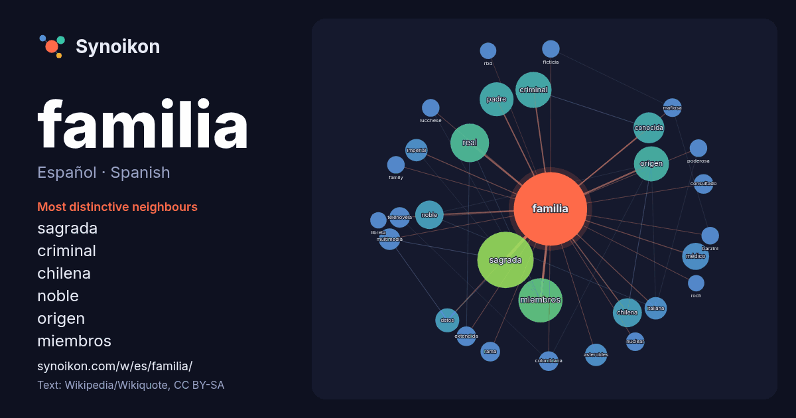

Español · Spanish · popular word
familia
“family” · The words found around it in 1420 instances from Spanish Wikipedia, Wikiquote.

Most distinctive neighbours
- sagrada 79×
- criminal 31×
- chilena 19×
- noble 17×
- origen 15×
- miembros 15×
- real 14×
- médico 13×
- multimedia 13×
- conocida 12×
- asteroides 12×
- imperial 11×
- consultado 11×
- extendida 10×
- padre 10×
- italiana 10×
- telenovela 10×
- mafiosa 10.0×
- colombiana 9.9×
- lucchese 9.0×
× = how many times more often than in general Spanish Wikipedia text.
Most frequent neighbours
- sagrada 83
- miembros 51
- real 39
- criminal 34
- origen 32
- padre 30
- serie 27
- conocida 25
- chilena 22
- noble 21
- estadounidense 19
- médico 19
- grupo 18
- español 16
- datos 15
- película 15
- casa 14
- nombre 14
- antigua 13
- asteroides 13
In context
- puede diferenciarse la familia según el grado de parentesco entre sus miembros. El término familia procede del latín famīlia, "grupo de siervos y esclavos Wikipedia snippets · Familia
- Una familia de lenguas o familia lingüística es un grupo de idiomas con un origen histórico común y emparentados filogenéticamente, es decir, parecen derivar Wikipedia snippets · Familia de lenguas
- siempre llana y plural, como Homininae, homininos). Familia es una palabra de origen latino (plural: familiae) de donde se toma para uso en la nomenclatura Wikipedia snippets · Familia (biología)
- multimedia sobre Sagrada Familia. Sagrada-familia.es información sobre Antoni Gaudi y la historia de la Basílica de la Sagrada Familia. Datos: Q618057 Multimedia: Wikipedia snippets · Sagrada Familia
- bajo el mando del cabeza de familia. La familia era realmente la célula básica de la sociedad romana. El pater familias era el hombre romano que no dependía Wikipedia snippets · Familia (Antigua Roma)
- La familia imperial de Japón (皇室, kōshitsu?) se compone de los miembros de la familia del actual emperador de Japón que cumple con sus obligaciones oficiales Wikipedia snippets · Familia imperial japonesa
- miembros de la familia real. De hecho, hay una clara diferencia entre los que conforman la familia real y, por otro lado, la familia del rey. Esta diferencia Wikipedia snippets · Familia real española
- pacto de familia. Tratado de Aranjuez de 1779. Texto de los tratados: Primer pacto de familia. Segundo pacto de familia. Tercer pacto de familia. Datos: Wikipedia snippets · Pactos de Familia
More Spanish words
- agua
- arte
- bosque
- caballo
- camino
- campana
- canción
- ciencia
- ciudad
- clima
- comida
- corazón
- desierto
- dinero
- dios
- espejo
- estrella
- fuerza
- gato
- historia
- invierno
- isla
- jardín
- lengua
- lluvia
- madre
- mapa
- miel
- montaña
- muerte
- naturaleza
- oro
- otoño
- pan
- perro
- puente
- reloj
- sal
- salud
- silencio
- sombra
- tiempo
- tormenta
- trabajo
- tren
- té
- verano
- verdad
- vida
Precomputed on 2026-10-09 with default settings (±5 words, medium corpus). The interactive map can refresh it with live data.